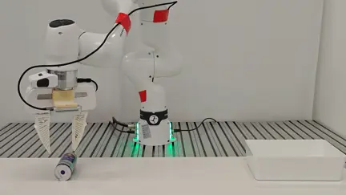

专用流策略
Flow-matching Policy
面向单一任务，从示范中学习动作分布
AdaFlow · ManiFlow · FlowPolicy
同一个预训练策略，换一种采样方式
冰球回击率 · 每种方法 500 个来球
机器人学习学术报告 · 2026.11.25
Parallelizing Flows for One-Pass Action Generation
多步去噪的质量，单次前向的时延
Kangye Ji
背景
Flow-matching Policy
面向单一任务，从示范中学习动作分布
AdaFlow · ManiFlow · FlowPolicy
VLA
通用大模型加流匹配动作头，听懂指令再出动作
π0 · GR00T N1.7 · Xiaomi Robotics 0
World Action Model
联合预测未来视频与动作
Fast-WAM · OpenWAM · DreamZero
问题
每一步的输入都依赖上一步的输出，N 次前向只能首尾相接
原生 10 步
原生 1 步
快了，成功率却掉了一半多
物体在移动、接触在变化时，这段等待就意味着错过时机 · 数据：Fast-WAM · RoboTwin 2.0 · 50 项任务 · 论文表 3、表 4
已有方法
减少函数求值次数，直接缩短串行调用链
牺牲质量步数很少时，离散化误差会损伤任务表现
把多步采样学进少数几次前向
牺牲通用性需针对每个策略额外训练，优化可能不稳定
复用中间特征或动作状态，省去重复计算
牺牲质量复用越激进，近似误差越限制加速比
“
让任意预训练流策略，以单次前向的时延，保留多步采样的质量
设计哲学
思路 · 把多个去噪阶段放进同一个批次
实测 · Fast-WAM · 批次里的阶段数从 1 增到 10，时延几乎不变
矛盾 · 去噪天然是串行的
第 i+1 步的输入，正是第 i 步的输出
同一时刻，后面阶段的输入还不存在
ParaDiGMS 与 ParaSolver 用迭代修正放松依赖，但每个样本仍需多轮前向
关键洞察
去噪 在每次前向内并行，跨重规划串行
为什么可以分摊
物理时间 · 每轮预测 H = 8 步，只执行前 E = 2 步
动作编号 →
去噪时间 · 动作 9 沿对角线逐轮去噪
较早的观测在高噪声阶段勾勒计划，临近执行的观测完成最后的修正：计划随着行动临近而逐渐清晰
方法 · OneFlow
保留 N+1 个完整动作块，处在错开的噪声水平
每个块只有单一噪声水平，和预训练时的输入完全一致
不改结构，不改权重
初始化：回合开始时用原生多步采样一次，保留全部中间状态
方法 · 组件一
去掉已执行的 E 格，剩下的动作连同各自的源噪声一起前移
尾部空出的格子，用末端残差延伸，再按各阶段噪声尺度 ri 加入同一份新噪声
方法 · 组件二
对齐后的候选

ok终点估计
Di = Ci + ri Vi
预计算权重
X′i+1 = αiX′i + (1−αi)Di
新的流水线
权重只取决于去噪网格，可以预先算好，一次矩阵乘法重建全部状态
中间状态也吸收了新观测，修正会沿对角线传给之后的重规划
系统 · OneFlow+
滚动流水线天然适合系统优化
初始化后张量形状固定，每轮重复同一张图
N 个块共用同一观测，条件特征每轮只算一次
CUDA Graphs 捕获整轮计算，复用缓冲区，精简 CPU 与 GPU 之间的传输
预计算只依赖去噪网格的量，观测相关特征每轮计算一次
融合批量计算中的相邻算子，并针对每个负载自动调优
实验
RoboMimic
状态输入与 RGB 输入
5项操作任务
SimplerEnv
Google Robot 与 WidowX
3组评测设置
RoboTwin 2.0
标准场景与随机化场景
10,000回合 / 每种配置
结果一 · 任务表现
OneFlow 与 OneFlow+ 在初始化后每轮只调用 1 次网络 · 论文表 1、表 2、表 3
结果二 · 同样一次前向
GR00T N1.7 · Google Robot 变体聚合 · 每轮 1 次前向
每轮从新噪声出发，各自独立修正当前这一个样本
接续上一轮保留的中间估计，计算跨轮累积
结果三 · 测试时扩展
成功率 %
动作生成时延 ms
Fast-WAM · Handover Block · 未启用执行引擎
结果四 · 端到端时延
公平对照：给原生十步也接上同一个执行引擎，Fast-WAM 为 51.83 ms，OneFlow+ 仍快 3.1×
A100 · 批大小 1 · 从 CPU 上的观测到解码后的动作 · 预热后中位数 · 论文表 4
结果五 · 动作连续性
RoboMimic 五项任务全部改善 · 论文图 4
真实机器人 · Franka × GR00T N1.7
原生 4 步 → OneFlow+ · 每种方法 50 回合 · 每项任务 100 条示范训练 GR00T N1.7 · 论文表 5
同一策略 · 同一场景
RTX 4090 上的模型推理中位数 · 实拍 1× 速度
一个对照
冰球任务 · 两种配置的推理时延几乎相同
只看推理时延，解释不了全部差距
跨轮持续修正动作计划，是与此一致的一种解释
OneFlow+ 11.97 ms，低于 60 Hz 控制周期 16.67 ms
消融
Xiaomi Robotics 0 · Google Robot 变体聚合 · 全部每轮 1 次前向
中间状态必须吸收最新观测，后续重规划才能在修正后的估计上接续
视觉匹配设置趋势一致：89.2 → 84.5 / 84.1 / 42.2 / 6.7 · 论文表 6
机制分析
同样观测、同样噪声、同样调用预算
RoboMimic 五项任务 · 状态输入 · 补充材料图 8
拿起物体后，目标架突然平移 8 cm
OpenWAM · Place Object Stand · 补充材料表 11
边界
依赖相邻窗口重叠与保留的中间状态，每个回合开始仍需一次原生多步初始化
批内仍要处理多个阶段，执行引擎以显存换速度 · GR00T N1.7 在 16 个阶段下峰值显存 5.95 / 6.08 / 13.97 GiB
视频与动作的联合滚动预测，留给后续工作
更一般的方向：在单次前向内扩展测试时计算
需要细读论文细节？打开报告阅读版